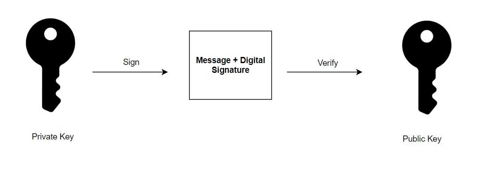
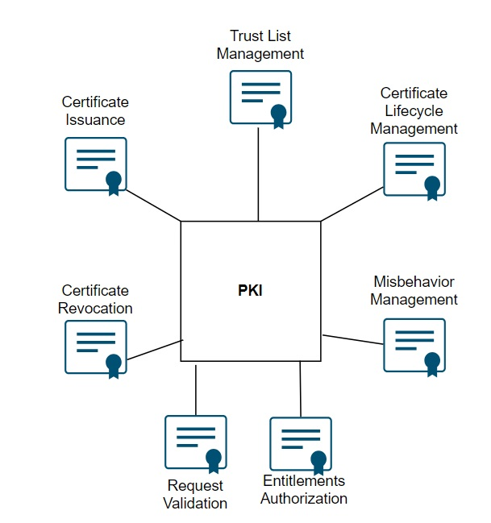
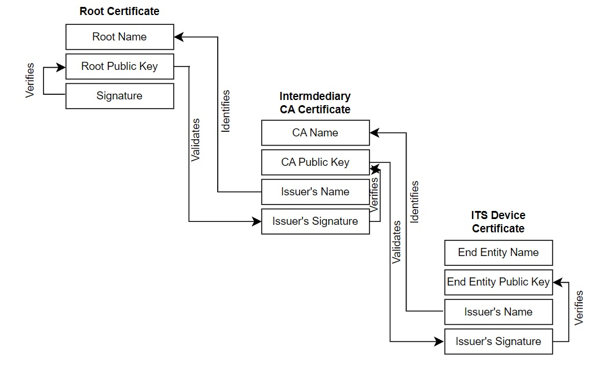

ITS Cybersecurity Controls¶
ITS cybersecurity architectures require implementers to configure devices, systems, and services using modular security capabilities. Each capability outlined in this section provides specific instructions to ensure communications are authenticated, devices are trusted, and operations remain secure over time.
Use these capability descriptions to guide the setup of secure components, enforce certificate and message policies, implement misbehaviour detection, and maintain operational trust.
Cryptographic Key Generation (Physical Layer)¶
Configure each ITS device to generate and store cryptographic key pairs used for digital signatures. These keys enable message receivers to validate the identity of the sender and confirm the integrity of the message content. Key generation should occur on the device to reduce the risk of key exposure. Each key pair includes a private key, which must be kept secure, and a public key, which can be shared freely.

Do not allow the private key to be exported from the device. If compromised, it can be used to impersonate the device in any V2X transaction. The public key, in contrast, is designed for distribution and is shared through digital certificates issued by a Public Key Infrastructure (PKI). Other devices and services use the public key to authenticate signed messages or encrypt data sent to the device.
Certificate Lifecycle Management (Management Layer)¶
When selecting a PKI provider, confirm that the provider adheres to clearly defined operational policies and procedures. These must be documented in a Certificate Policy (CP) and Certificate Practices Statement (CPS), which govern how certificates are issued, renewed, and revoked. Review these documents in detail to ensure alignment with your deployment region’s requirements. For example, in North America, providers should implement the Security Credential Management System (SCMS) architecture. In Europe, they must follow the Cooperative Credential Management System (CCMS) model.
Ensure the PKI provider supports robust certificate revocation mechanisms. Certificates may need to be revoked due to device misbehaviour, key compromise, or violations of policy. The PKI must publish Certificate Revocation Lists (CRLs), and devices under your management must be configured to download and enforce them. Understand how the provider handles revocation for both long-term and short-lived certificates, for example ETSI-based CCMS systems rely on short certificate lifetimes to minimize revocation needs, while SCMS-based deployments use CRLs more actively to revoke pseudonym or enrolment credentials.
Before authorizing a PKI to issue credentials to your devices, confirm that it enforces strict eligibility criteria. Devices must support secure key storage, perform firmware validation, and may need to undergo operational testing to verify compliance with relevant policies. Only devices that meet these conditions should receive credentials.
Work with PKI providers that undergo routine audits to validate compliance with their CP and CPS. Be aware that failure to meet regulatory expectations, cybersecurity incidents, or deviation from published practices may lead to the PKI being removed from Certificate Trust Lists (CTLs), which could disrupt trust in the ITS. Maintain active oversight to ensure the PKI continues to operate securely and transparently across the full lifecycle of its services.
The figure below illustrates some primary functions of a PKI.

These functions are enabled through a system architecture composed of Root Certificate Authorities (Root CAs) and Intermediate CAs that collectively form a trust chain.
Certificate Types and Structure¶
Devices are issued long-term identity credentials (e.g., enrolment Credentials) and short-lived operational certificates (e.g., pseudonym certificates or Authorization Tickets). Each certificate is bound to a device’s public key and defines its permissible actions. In Europe, ETSI defines a suite of certificates such as Authorization Tickets (ATs) and Enrolment Credentials (ECs) used within the CCMS. In North America, the SCMS uses similar certificate types but with implementation-specific differences. Certificate structures are defined by international standards such as IEEE 1609.2 (predominantly used in North America) and ETSI TS 103 097 (used in Europe). The table below provides information on the types of certificates found across both North America and Europe.
| Certificate Type | Purpose | Description | Region |
|---|---|---|---|
| Root CA Certificate | Root of trust | Trust anchor for verifying other certificates; manually installed in devices | Global |
| Intermediate CA | Delegation of signing authority | Issues certificates to enrolment and Authorization Authorities | Global |
| Enrolment Credential (EC) | Device identity proof | Long-term credential proving a device's legitimacy; used to request operational certificates | Global |
| Authorization Ticket (AT) | Application-level message signing | Short-lived pseudonym certificate used to sign V2X messages (e.g., CAM, DENM, BSM) | Europe (ETSI) |
| Pseudonym Certificate | Equivalent to AT in SCMS | Privacy-preserving certificate for real-time message signing for any data exchanges between parties with no pre-existing relationship (e,g.., RSU and OBU communications). | North America |
| Trust List Manager Cert | Management of trusted authorities | Used to sign and distribute Certificate Trust Lists (CTLs or ECTLs) | Global |
Authenticated Message Validation (Application Layer)¶
To validate incoming messages, configure each ITS device to verify that messages are digitally signed by a trusted Certificate Authority (CA). This involves checking the sender’s certificate and ensuring that the issuing CA is included in the device’s list of trusted authorities. The certificate itself embeds the identity of the issuing CA, which the device uses to build a trust chain from the sender to a known Root CA.

To complete this process, deploy and maintain a Certificate Trust List (CTL) within each device. The CTL defines which Root CAs are trusted for a specific deployment or jurisdiction. Devices should reject any certificate not chaining to a trusted Root CA listed in the CTL. This ensures that only approved certificates, issued according to policy are accepted in the ITS environment.
Transport Security (Network and Transport Layer)¶
Configure ITS devices and services to support authenticated and, when required, encrypted communications. Use standardized security protocols suited to the specific communication interface. For TCP-based connections to backend systems, implement Transport Layer Security (TLS) 1.3 with approved cipher suites. For latency-sensitive or UDP-based communication, apply Datagram Transport Layer Security (DTLS). Choose the appropriate transport protocol (TCP or UDP) based on the operational needs of the message flow—for example, use UDP with DTLS for high-frequency telemetry data.
Enable mutual authentication using PKI-issued certificates whenever possible. Both parties in a secure session should authenticate each other to ensure trust. Validate that ITS device vendors support these features and provide configuration options for enabling TLS 1.3, DTLS, and relevant ITS protocols such as IEEE 1609.2 and 1609.3.
Session Security (Network and Transport Layer)¶
ITS stations often require persistent, authenticated communication sessions. These sessions must be established in a secure and standards-based way to ensure that only authorized and trusted components participate. Agencies and implementers should use ISO 21177 to manage these secure sessions between ITS stations. ISO 21177 specifies how ITS stations establish a secure session, exchange certificates, and manage session lifetimes. During session establishment, each station must present a valid certificate issued by a trusted Certificate Authority (CA), and the session should be rejected if this verification fails.
ITS operators should verify that device vendors support ISO 21177 and confirm that devices can perform secure session negotiation in accordance with ISO 21177, including the need to renegotiate sessions regularly. This includes validating device handling of outlier conditions, such as when a peer certificate expires, revokes or is otherwise invalid.
Network Security (Network and Transport Layer)¶
Use secure network protocols to protect message exchange between dynamic sets of ITS participants. OBUs, RSUs, and backend systems may connect over wireless and wired links, each requiring interface-specific security configurations at the network layer. Devices should not be able to transmit or accept unauthorized messages solely because they are connected. Apply authentication and integrity checks to all network traffic, especially for safety-critical and control messages. For V2X broadcasts like BSM, MAP, and SPaT, use message formats that include digital signatures. In North America, use IEEE 1609.2.1. In Europe, use ETSI TS 103 097. Configure receiving devices to validate these signatures in real time and check permissions using ITS-AID, PSID, or SSP values.
Encrypt traffic containing PII, credentials, or commands. If transport encryption is not feasible, apply message-level encryption using IEEE 1609.2.1 or ETSI TS 102 943 to ensure confidentiality across untrusted or routed links. Include IEEE 1609.3 to support ITS-specific service discovery and message delivery over IPv6. When implementing, configure routing components and service layers with strict access controls and traffic filtering. Avoid bridging ITS networks with general-purpose enterprise networks unless protections are clearly defined and enforced.
ITS Station Access Control (Access Layer)¶
Control which devices and messages are allowed to interact with ITS stations by enforcing strict access policies. Each incoming message or session must include valid permissions, such as ITS-AIDs or PSIDs, that match the station’s expected service profile. Reject messages with missing attributes, expired certificates, or unauthorized scopes.
Apply filtering rules to network interfaces to block unused ports, unsupported protocols, and unexpected traffic sources. Configure devices to verify application-layer permissions before processing data, ensuring only authorized functions are executed.
Local Misbehaviour Detection (Facilities Layer)¶
Equip each ITS device with a Local Misbehaviour Detection Service to evaluate incoming V2X messages in real time. Use rule-based or context-aware detectors to assess message plausibility, such as whether reported positions fall within mapped boundaries or claimed speeds exceed physical limits.
Apply these checks to all relevant message types, (e.g,. BSM, SPaT, MAP, CAM), and flag any data that violates operational expectations. Log findings locally and transmit significant anomalies to a backend authority for further review or revocation processing.
Misbehaviour Reporting (Facilities Layer)¶
When suspicious activity is detected, the ITS device should generate a Misbehaviour Report (MBR) containing a clear description of the anomaly, supporting evidence, and contextual metadata such as time and GPS location. The report must be digitally signed using the device’s authorization certificate and transmitted securely to the designated Misbehaviour Authority (MA).
Ensure each device enforces rate limits or backoff mechanisms to prevent report flooding or abuse. Maintain integrity and authenticity by requiring authenticated transport channels and policy-compliant reporter identification.
Misbehaviour Processing and Adjudication (Management Layer)¶
Misbehaviour Authorities (MAs) must aggregate and analyze incoming reports to identify patterns of malicious or non-compliant behaviour. Reports from multiple sources should be correlated to improve confidence before action is taken. Remediation actions include certificate revocation, service suspension, or triggering policy-based responses.
Revocation decisions must comply with the governing certificate policy and be authorized by the appropriate trust authority. In SCMS deployments, this includes generating and distributing a CRL that reflects updated trust status.
Authenticated Software (Access Layer)¶
ITS devices must only execute software that is authentic, verified, and untampered. Each device should validate the integrity of its firmware and application software at boot and before execution. Validation is performed using cryptographic signatures issued by trusted authorities.
Software updates must be delivered over secure, authenticated channels. Each update package must be signed and version-controlled. Devices should reject unsigned or improperly signed updates, and log all update events for audit.
Implementers must provide secure boot capabilities, enforce rollback protections, and require re-verification after update installation. Update infrastructure should include mechanisms to revoke compromised versions and distribute critical patches rapidly across the deployment.
Anomaly Detection and Logging (Facilities Layer)¶
ITS deployments must actively detect and investigate unusual system behaviour that may indicate misconfiguration, malfunction, or cyberattack. Devices must be capable of logging security-relevant events locally and forwarding alerts to backend monitoring systems.
Device vendors must configure their products to log key security events, including certificate validation failures, unauthorized access attempts, unexpected configuration changes, or abnormal message patterns. Logs must include sufficient context (e.g., timestamps, message type, origin, and action taken) and be cryptographically protected to prevent tampering. Devices should also support configurable alert thresholds to reduce noise while capturing meaningful deviations.
ITS operators (IOOs) must establish centralized monitoring processes to collect and review logs from connected components. These systems should aggregate alerts, detect trends across the network, and prioritize events that require response. Operators must implement procedures for triage, escalation, and correlation of events across time and geography.
Systems should also be configured to flag unexpected traffic patterns, abnormal certificate usage, or operational anomalies. This supports both reactive incident response and proactive system hardening. Operators should ensure that logs are retained, reviewed regularly, and protected according to policy.
Incident Management (Management Layer)¶
ITS operators must establish a structured incident response capability that enables them to detect, respond to, and recover from cybersecurity events. This begins with developing an incident response plan that clearly defines roles, escalation paths, communication procedures, and recovery steps. The plan should be tailored to the operational environment and account for the types of incidents likely to affect ITS systems, such as certificate misuse, misbehaviour reports, or backend system intrusions.
To operationalize this capability, operators should implement procedures for continuously monitoring systems, receiving alerts from local devices or backend services, and triaging incoming reports. Designated staff must be trained to investigate anomalies, determine impact, and take immediate actions such as isolating devices or revoking credentials. These actions must follow predefined policies and certificate management procedures to ensure that only authorized entities can initiate trust changes.
Operators must ensure that every incident is logged in detail and supported by evidence from logs, misbehaviour reports, or message traces. These records enable accountability and support post-incident analysis. Communication protocols should be in place to notify affected stakeholders and, when appropriate, provide public disclosure consistent with regional policy or legal obligations.
Vendors play a critical role by ensuring their devices support incident containment. Devices must include interfaces that allow operators to remotely disable or restrict functionality, support credential revocation workflows, and provide diagnostics that help validate current device status. Documentation must be clear and accessible so that IOOs can act quickly during active incidents.
To maintain readiness, operators should conduct regular incident response exercises. These tests help verify that the team understands their responsibilities and that technical processes work as expected. After any incident, operators must perform a full review, identify gaps in detection or response, and update their policies and systems to prevent recurrence.
Device Authentication (Access Layer)¶
Provision each ITS device with valid set of certificates from a trusted PKI. Use enrolment credentials to establish the device’s identity during provisioning, and assign pseudonym or authorization certificates for operational messaging.
Configure devices to authenticate all incoming V2X messages using attached certificates. Require that certificates chain to a trusted root listed in CTL and that they include valid permissions for the message type and context (e.g., correct ITS-AID, PSID, SSP, or region). Reject messages with expired, revoked, or improperly scoped certificates. Apply strict validation on every message, including checking geographic and validity fields.
For session-based interfaces, enforce mutual authentication using device certificates during TLS or DTLS handshakes. Require both ends to present valid certificates and validate the full trust chain before establishing a session.
Anonymity and Pseudonymity (Facilities Layer)¶
Provision each vehicle or device with a set of short-term pseudonym certificates issued by a trusted PKI. Configure devices to rotate among these certificates frequently and unpredictably to prevent long-term tracking.
Ensure all routine V2X messages, such as BSM and SPaT are signed using pseudonym certificates, not long-term identity credentials. Do not allow devices to reuse a pseudonym certificate outside its designated lifetime or geographic scope. For backend reporting or data uploads, require that devices continue to use pseudonym credentials unless a specific function mandates identity resolution. Enforce access controls that limit which backend systems can request identity linkage, and ensure that linkage is only performed under strict policy conditions (e.g., misbehaviour adjudication).
Validate that vendors have implemented proper certificate switching logic and that identifiers exposed in message fields are cryptographically unlinkable across time and context.
Service Authorization (Application Layer)¶
Configure each ITS device to validate that it holds the correct entitlements before transmitting messages or requesting services. These entitlements are encoded in the device’s certificate and define what types of messages it is authorized to sign, the services it can access, and the geographic or temporal limits of its operation.
For North American deployments, use Provider Service Identifiers (PSIDs) and Service-Specific Permissions (SSPs) to encode application-level access rights. Ensure the device enforces these permissions at runtime, rejecting attempts to send or act on messages outside its authorized scope. In Europe, configure devices to interpret and enforce ITS Application Identifiers (ITS-AIDs) as defined in ETSI standards.
When issuing pseudonym or authorization certificates, ensure the PKI restricts each certificate’s entitlements to the minimum necessary for the device’s role. Devices must not be allowed to bypass or override the restrictions defined by their entitlements.
Validate during integration testing that vendors correctly map application functions to entitlement fields and deny operations not explicitly permitted by the certificate.
Each certificate includes varying fields depending on its type and role. For example, Authorization Tickets (in ETSI) and pseudonym certificates (in SCMS) include permissions that define which messages a device may sign, and the region in which the certificate is valid. A certificate can be explicit, meaning it includes the full public key, or implicit, where only a reconstruction value is stored and the recipient computes the public key. Implicit certificates are smaller.
Secure Time Synchronization (Management Layer)¶
Configure all ITS devices to obtain time from authenticated, trusted sources. Accurate time is required to validate certificate lifetimes, enforce expiration policies, and detect replayed messages. If a device’s clock is out of sync, it may accept expired messages, reject valid communications, or fail to enforce certificate validity windows.
Use secure time synchronization protocols such as NTP with authentication or GNSS signals verified through cryptographic means. Devices that rely on GNSS for time must implement safeguards to detect spoofing. As an operator, confirm that every device regularly synchronizes its clock and includes safeguards to reject time updates from untrusted or unauthenticated sources.
Secure (Device) Storage (Physical Layer)¶
Configure ITS devices with tamper-resistant storage mechanisms to protect cryptographic materials and sensitive data. Private keys, cryptographic seeds, and other critical primitives must be stored in secure elements or hardware security modules (HSMs) that meet appropriate assurance levels, such as FIPS 140-3 or equivalent. Ensure that private keys are generated and stored within the secure boundary of the device and are never exportable. Devices should support key isolation, cryptographic operations within hardware, and protections against physical and logical attacks.
In addition to key material, configure secure storage for Personally Identifiable Information (PII), configuration settings, and operational commands. Enforce access controls and integrity verification for all data stored within secure areas. When possible, segment sensitive storage from general-purpose memory to prevent unintended exposure.
When evaluating or procuring devices, confirm vendor implementation of secure storage architectures and request documentation demonstrating compliance with relevant security standards.
Secure (Device) Configuration (Application Layer)¶
Establish secure configuration baselines for all ITS devices before deployment. Disable unused physical ports, wireless interfaces, and network services to minimize the attack surface. Only enable the specific protocols and ports required for operational functionality. Replace all default usernames and passwords with unique, strong credentials. Enforce role-based access control for administrative interfaces, and require multifactor authentication where supported. Ensure that devices support secure boot and that only validated firmware can be loaded.
Implement configuration management processes that include audit logging of changes and regular compliance checks to confirm that devices remain securely configured over time. Document and enforce procedures for hardening devices during provisioning and revalidating configurations during maintenance cycles.
Operators should work with vendors to verify support for secure configuration features and ensure that secure defaults are applied before devices are placed into the field.
Tamper Detection and Response (Physical Layer)¶
Design ITS devices with hardware protections that detect, resist, and respond to tampering. Protect cryptographic keys and credentials using secure elements or hardware security modules (HSMs). These components must isolate keys from general-purpose software and execute cryptographic operations in a protected environment. Integrate physical tamper detection features into each device. Use sensors or enclosures that detect opening attempts, voltage irregularities, or physical probing. Configure devices to erase sensitive data, such as private keys when tamper conditions are triggered.
As an operator, confirm through procurement and validation processes that deployed ITS equipment includes tamper resistance and hardware-based key protection. Require documentation or test results showing compliance with relevant security standards for physical protection and key isolation.
Audit and Compliance Checks (Management Layer)¶
Regular audits verify that devices and systems follow approved security practices. Compliance checks confirm that configurations, certificates, and software versions meet policy requirements.
Interoperability (Facilities Layer)¶
Configure ITS devices to accept certificates from external CAs only when those authorities are explicitly trusted through a CTL. When a device crosses into a new jurisdiction, it must validate that incoming messages are signed by certificates permitted for use in that region.
Use IEEE 1609.2.2 to define trust permissions for each external CA. These permissions specify which message types or roles are allowed for example whether a foreign certificate can be used to sign specific message types. Devices must be configured to enforce these trust permissions at runtime.
For deployments that span multiple jurisdictions, operators should establish CTL management procedures. When onboarding a new trust authority, update the CTL and push the update to all relevant ITS devices. Ensure devices verify the CTL signature and refresh their trust configurations automatically or on a scheduled basis. If a trust relationship is revoked, remove the corresponding CA from the CTL and distribute an updated list. Devices must reject certificates that no longer appear in the active trust list.